Etapa 8 • amostra visual (telas 01–04)
Capturas em 1440 × 900 (exceto onde indicado). Esquerda: Etapa 7. Direita: nova direção.
01.1 Abertura • família A
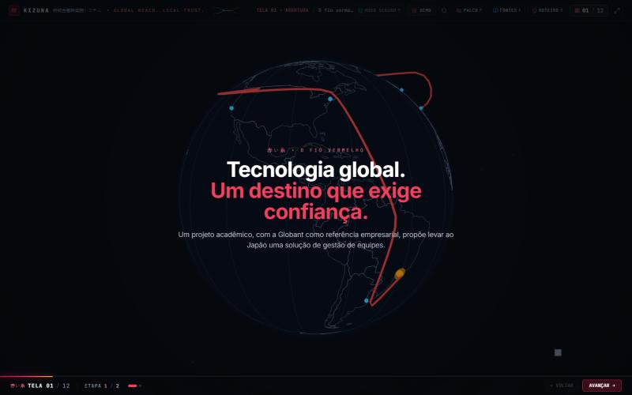
01.2 絆 Kizuna • família A
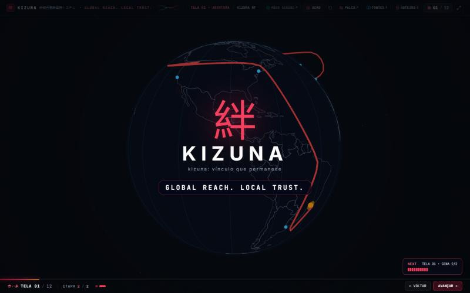
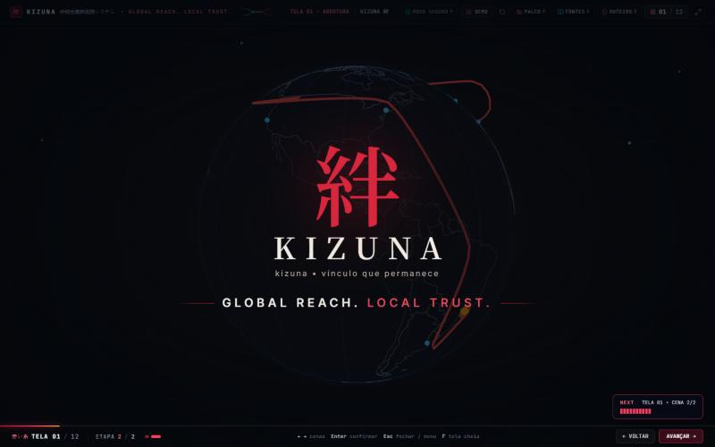
02.1 Números • família C
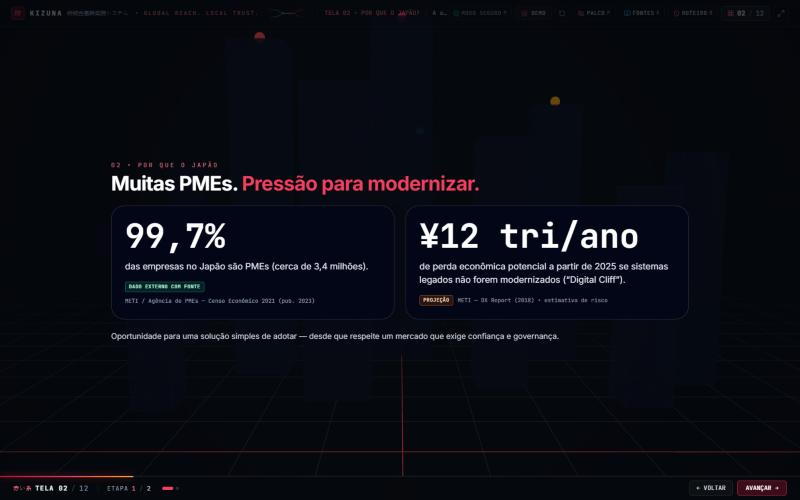
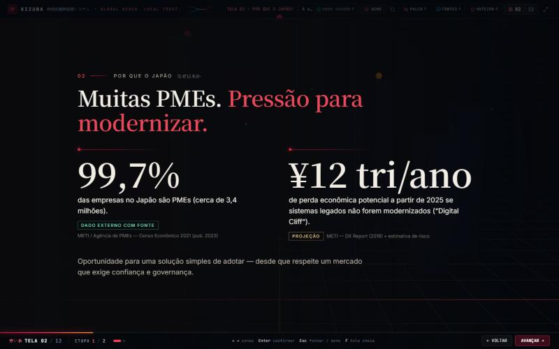
02.2 1908 • família A
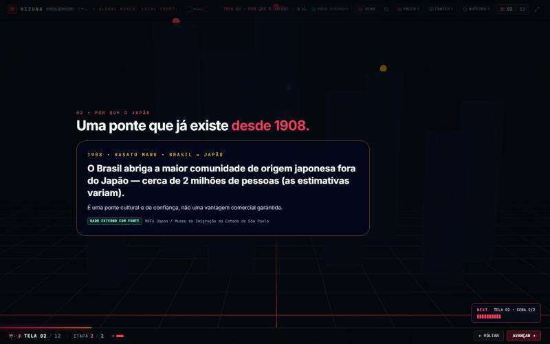
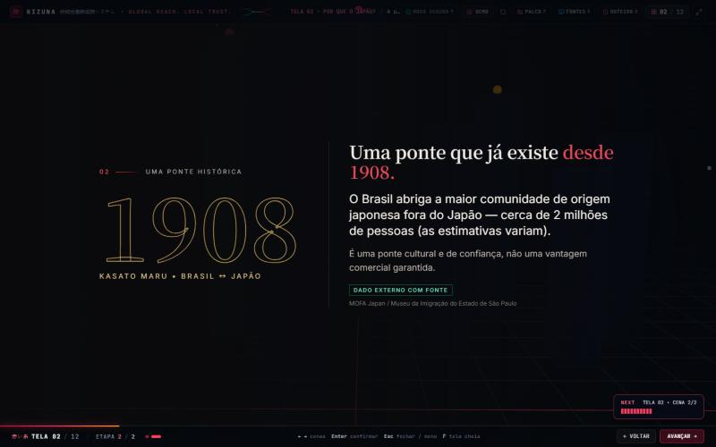
03.1 Portas • família B
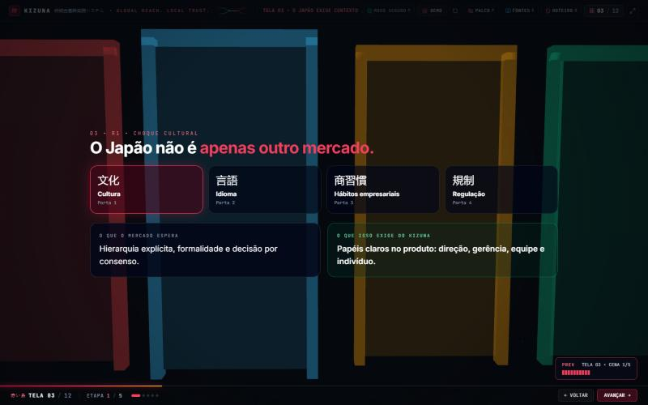
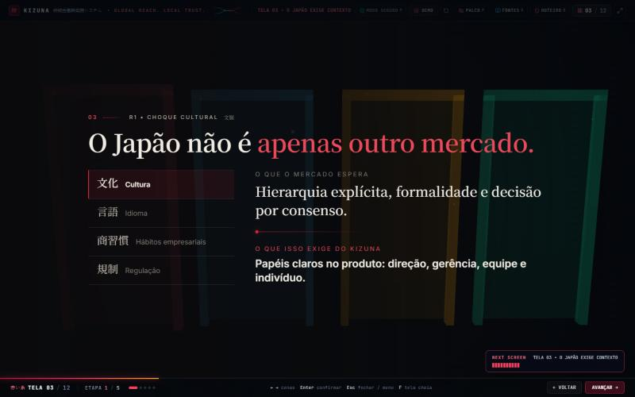
03.5 Síntese Global × Local • família A
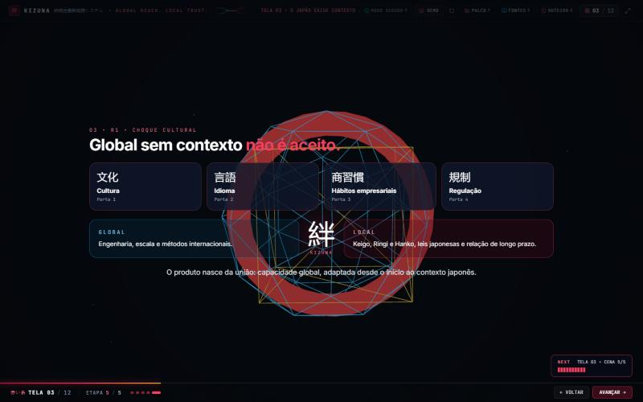
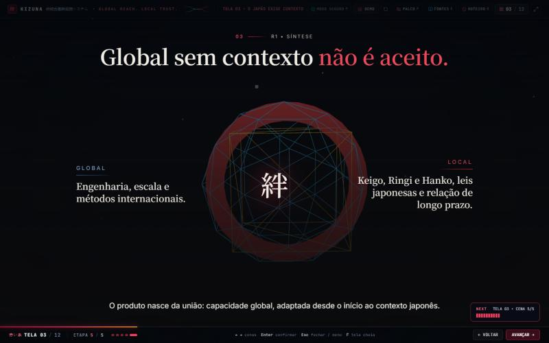
04 Kizuna Start • família B
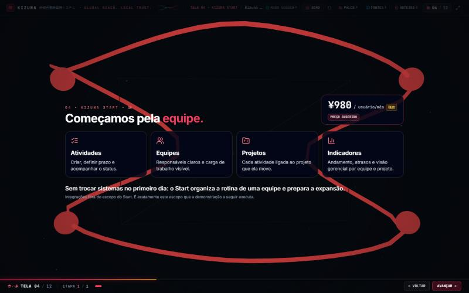
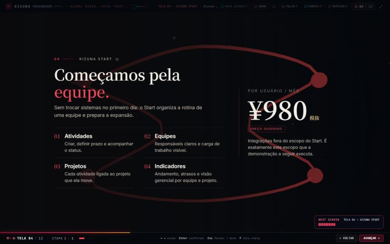
800 × 600 a mesma amostra em tela baixa
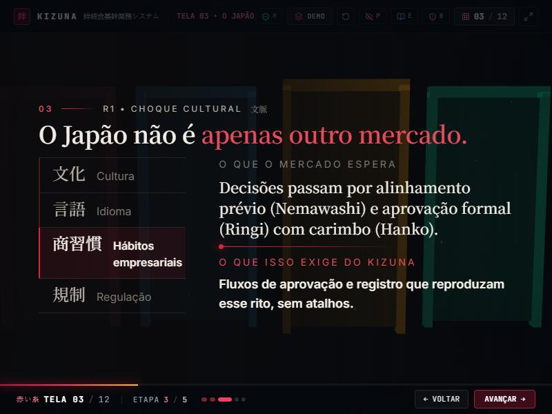
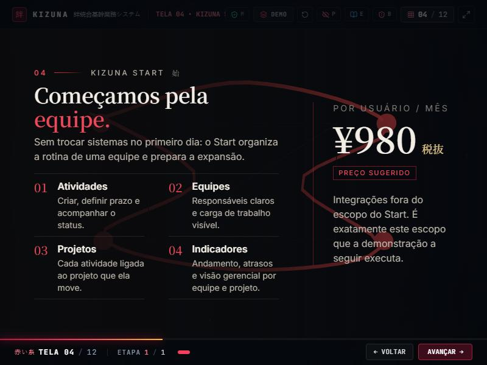